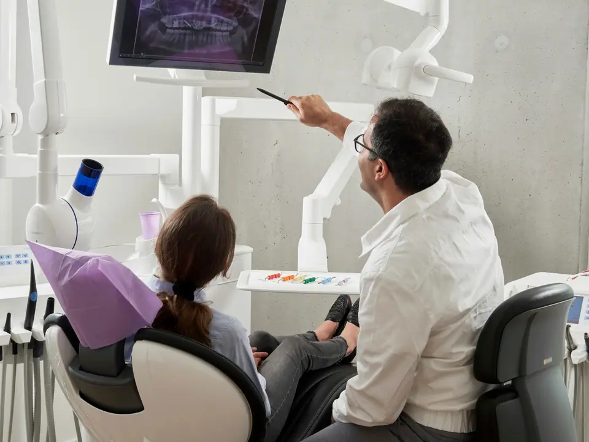
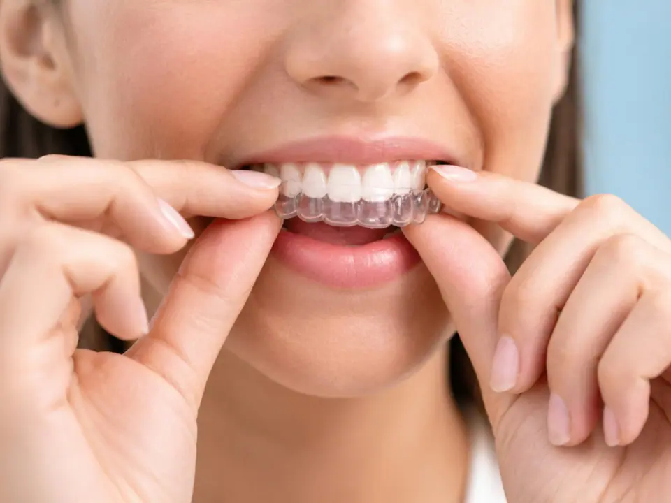
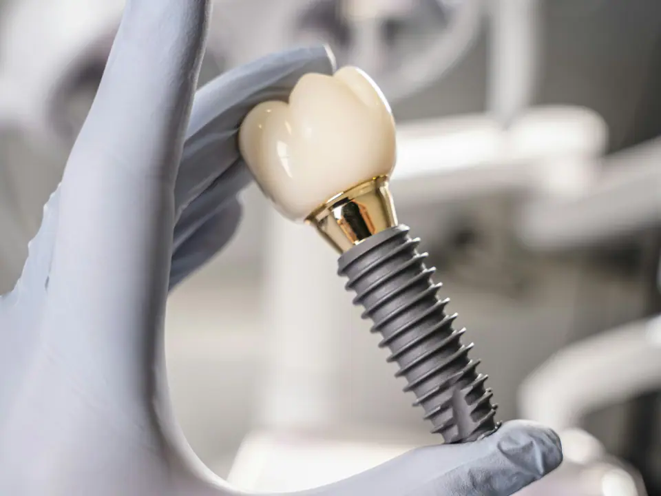
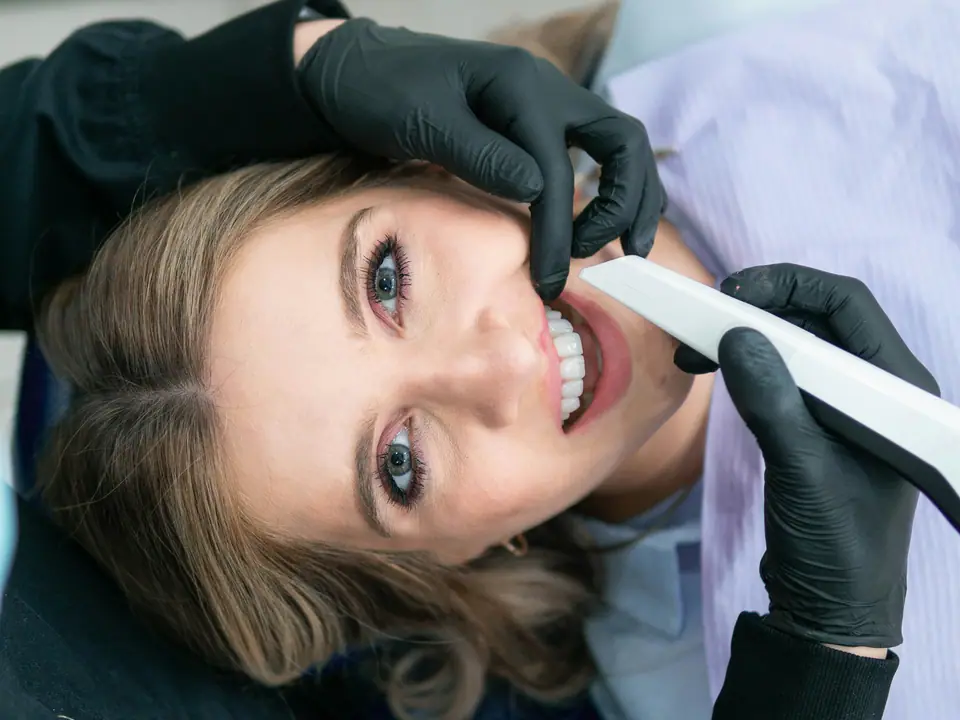
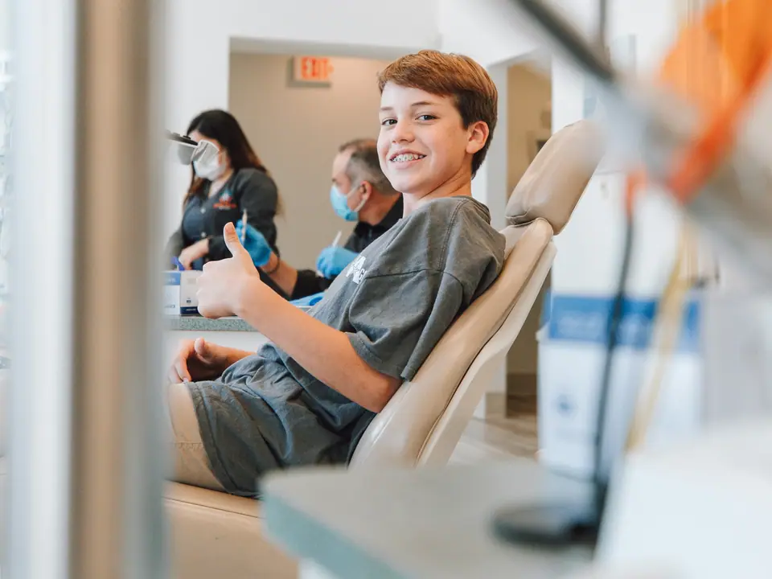
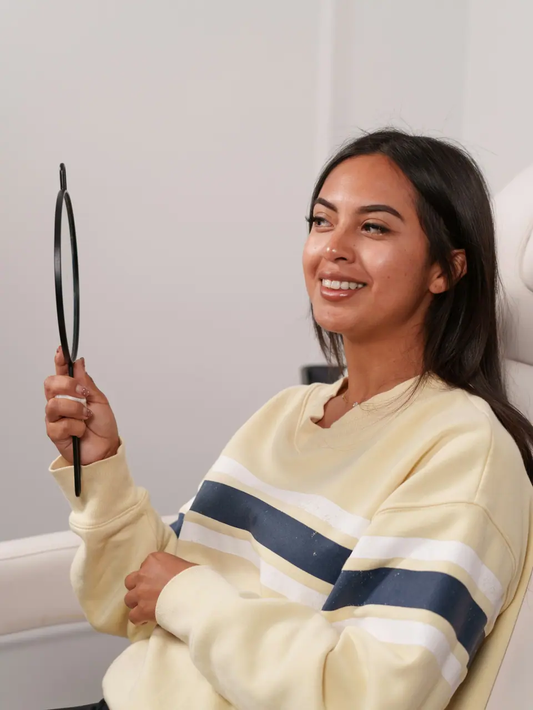
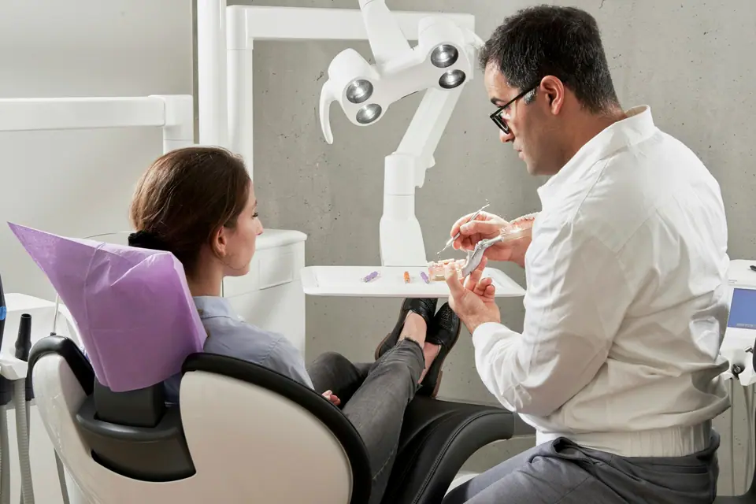
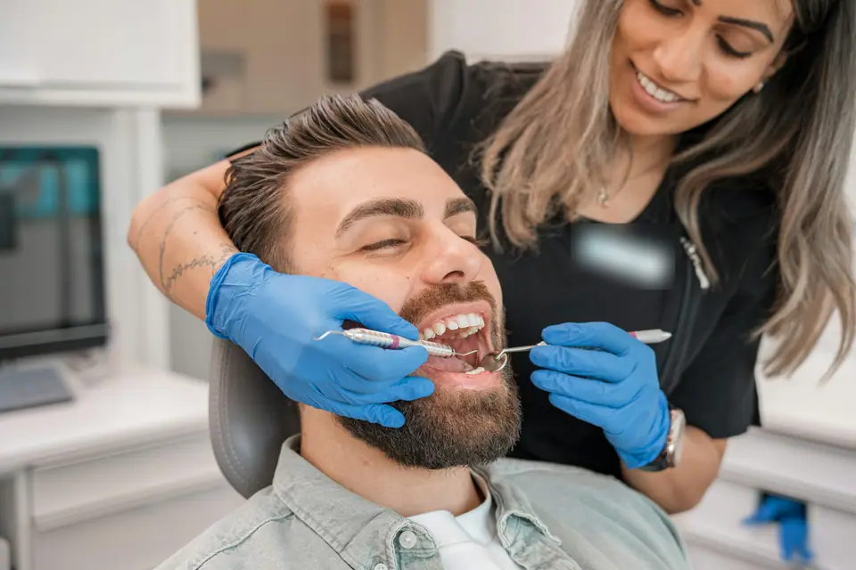
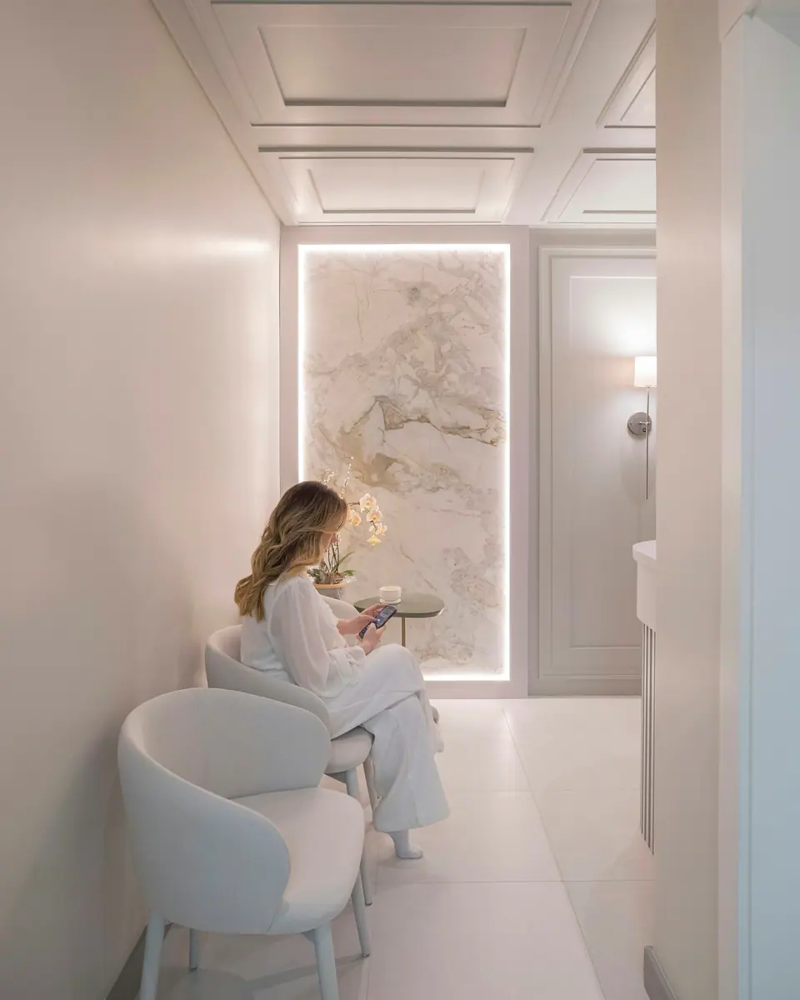

Dentista hurbila, argia eta presarik gabea
Urte bakoitzeko berrikuspenetik inplante batera. Hasi aurretik esaten dizugu zer daukazun, zenbat kostatzen den eta zenbat iraungo duen.
- Kale Nagusia, Tolosaldea
- Lehen bisita doan
- Haurrak eta nagusiak
Lehen elkarrizketa lasaia
Prezio argiko tratamenduak
Ukitu zerk kezkatzen zaituen, eta begiratu zer sartzen den eta zenbat balio duen. Azken aurrekontua idatziz emango dizugu lehenengo bisitaren ondoren.
Lagin honetarako adibide-prezioak.
-

Urtean behin hortzak eta hortzoiak begiratzen ditugu, erradiografia bat egiten dugu behar izanez gero, eta sarroa kentzen dugu. Zure ahoa nola dagoen eta zer zaintzea komeni den jakinda ateratzen zara.
- Iraupena
- 45 minutu
- Prezioa
- Berrikuspena 0 € · garbiketa 50 €
-

Bi edo hiru astean behin aldatzen diren ferula gardenak. Hasi aurretik, zure hortzak nola mugituko diren erakutsiko dizugu pantailan.
- Iraupena
- 6-18 hilabete, kasu bakoitzaren arabera
- Prezioa
- Azterketa doan · tratamendua 2.400 €-tik aurrera
-

Inplanteak hortzaren sustraia ordezkatzen du eta gainean koroa bat jartzen da. Zure kasuaren urratsak eta epeak azalduko dizkizugu, eta aurrekontua itxita eta idatziz emango dizugu.
- Iraupena
- 3-6 hilabete, behin betiko koroa lortu arte
- Prezioa
- Inplantea 950 €-tik aurrera · koroa 450 €-tik aurrera
-

Klinikan zuritzeak egiten ditugu. Hortz baten forma edo kolorea aldatzeko balio dute karillek. Aurretik, hortzak eta hortzoiak osasuntsu dauden aztertuko dugu.
- Iraupena
- Saio batean edo bitan zuritzea
- Prezioa
- Zuritzea 290 € · karilla 390 €-tik aurrera
-

Lehen bisita, hiru urte ingurukoa, kontsulta beldurrik gabe ezagut dezaten. Gero, azterketak, zigilatzaileak eta etxean hortzak garbitzeko aholkuak.
- Iraupena
- 30 minutu
- Prezioa
- Berrikuspena 0 € · zigilatzailea 25 € hortz bakoitzeko

Hasi aurretik, azalduko dizugu
Lehenengo bisitan zure ahoa patxadaz begiratzen dugu, pantailan zer ikusten dugun erakusten dizugu eta aurrekontu idatzi bat ematen dizugu. Konpromisorik gabe: zuk erabakitzen duzu, etxean eta presarik gabe.
- Zure hortzak eta hortzoiak aztertuko ditugu
- Erradiografia, behar izanez gero
- Aurrekontua idatziz, epeekin
- Ordu erdi eta kosturik gabe
Nork hartuko zaitu
Hiru gara eta beti ikusiko gaituzu, lehen bisitatik azken azterketara.
Izenak eta ereduzko argazkiak.


Miren Etxeberria
Odontologoa · inplanteak eta estetika
Lehen bisitak eta aurrekontuak egiten ditu.
Jon Aranburu
Odontologoa · ortodontzia
Helduen eta haurren ortodontzia darama.
Ane Goikoetxea
Hortzetako higienista
Garbiketak, zigilatzaileak eta etxerako aholkuak.
Min ematen dizu orain?
Deitu. Larrialdia bada, egun horretan bertan bilatzen dugu lekua, ahal dugun guztietan.
Adibide-zenbakia
- Hortz batek min ematen dizu
- Hortz hautsi bat edo mugitu dena
- Enpaste bat edo erori den koroa bat
Sukar handia baduzu edo hanturak ez badizu uzten irensten edo arnasten, zoaz ospitaleko larrialdietara edo deitu 112ra.
Ordaindu zure erritmoan
Tratamendu luzeak epeka ordain daitezke. Aukeratu bat eta begiratu zenbat aterako litzatekeen hilean.
Aurrekontua URDIN
- Tratamendua
- Inplantea eta koroa
- Zenbatekoa
- 1.400 €
- Hilabete kopurua
- 12
- Interesak
- 0 €
- Hilero
- 116,67 €
Adibide orientagarria. Finantza-erakundeak onartzen du finantzaketa.
Pazienteek esaten dutena
Lagin honetarako adibide-iritziak.
«Dentistaren beldur nintzen txikitatik. Urrats bakoitza azaldu zidaten, eta uste baino askoz errazagoa izan zen.»
«Larunbat batean deitu nuen haginetako minez eta aurpegia handituta, eta astelehenean, lehen orduan, arreta ematen ari zitzaizkidan.»
«Nire semeari asko gustatzen zaio etortzea: hortzak pantailan ikusten uzten diote.»
Eskatu hitzordua
Aukeratu eguna eta ordua online agendan, edo deitu eta lekua bilatuko dizugu.
Adibide-zenbakia
Ordutegia
- Astelehenetik ostegunera9:00–13:30 15:00–20:00
- Ostirala9:00–15:00
- Larunbata eta igandeaItxita
Adibide-ordutegia

Nola iritsi
Kale Nagusia, 0 · Tolosaldea (adibidearen helbidea)
- Oinez: kale nagusian, plazaren ondoan.
- Autoz: aparkaleku publikoa hiru minutura.
- Autobusez: bi minutura geltokia.
- Kontsulta beheko solairuan, koskarik gabe.